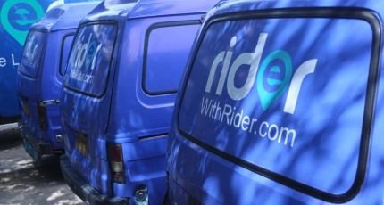
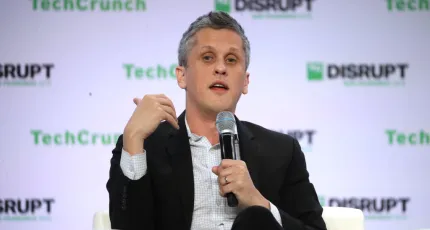

Iran’s relationship with the crypto mining sector is a love-hate one. The government is again restricting crypto mining activity as it tries to ease the strain on the country’s power su...
Rider is on a mission to provide online shoppers in Pakistan with “Amazon-like” next-day deliveries. The Karachi-based company announced it has raised $3.1 million in new funding from Y Combinatior...
It’s been a rough week for the crypto community as top tokens have seen massive selloffs, pushing some in the space to double down while leaving others to take stock off how the industry got ...
